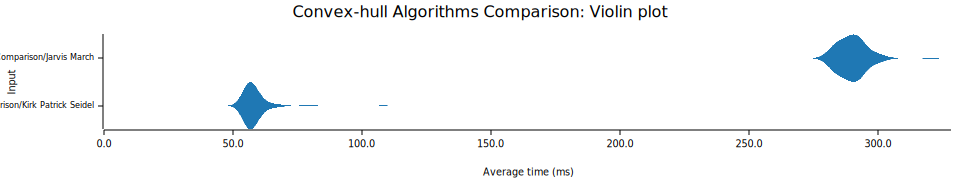

Crate convex_hull_simulation
source ·Expand description
§Convex Hull Simulation
A rust based step by step simulation of Jarvis March and Kirk Patrick Seidel algorithms for convex hull generation. The program uses Bevy as the game engine and egui for the ui library.
§What is a convex hull?
The convex hull of a finite point set S in the plane is the smallest convex polygon containing the set. The vertices (corners) of this polygon must be points of S. Thus in order to compute the convex hull of a set S it is necessary to find those points of S which are vertices of the hull. For the purposes of constructing upper bounds we define the convex hull problem, as the problem of constructing the ordered sequence of points of S which constitute the sequences of vertices around the hull.
§Program flow

§Comparison
§Introduction
| Feature | Kirk Seidel | Jarvis March |
|---|---|---|
| Algorithm Type | Divide and Conquer | Incremental/Gift Wrapping |
| Complexity | $O(n \log n)$ | $O(nh)$ |
| Advantages | Faster for large datasets, Handles non-convex shapes well | Simplicity of implementation |
| Disadvantages | More complex implementation, Potentially higher memory usage | Slower for large datasets, Sensitive to degenerate cases |
| Key Features | Divide and conquer strategy | Iterative selection of points, based on polar angle |
§Performance comparison
todo explain 
§Flamegraph

Modules§
- Contains the implementation of the algorithms used in the simulation.
- Contains the different types of distributions that can be used to place the points
Structs§
- Component to identify the color text.
- Resource to store whether egui wants focus or not.
- Resource to contain all data regarding the points.
- Component to identify the points. Used by despawn_entities function to despawn all the points.
- The timer for simulation, time step of simulation
- Resource to store the text comment on the screen
Constants§
Functions§
- Checks if egui wants focus or not by checking if the pointer is over the egui area.
- Creates a combo box with the given label and choices.
- Despawns all entities with the given component.
- Draws the graphics as declared in LineType enum.
- Controls the keyboard input for the simulation.
- main 🔒
- System to add points to the world by clicking.
- Adds controls for pancam system. Namely disables the camera when egui wants focus.
- setup 🔒Initial setup function
- ui 🔒Draws the UI for the simulation.